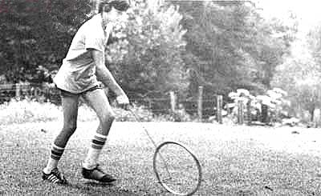

To the children I grew up with, wheelrolling wasn't just recreation . . . it was an ascent into nirvana! The speed, control, and music of the game produced an elevation of the soul against which all later ecstasies were to be judged.
Whrr-i-i-i-n-n-n-g! Folks could hear us coming through the hollows on those ages-ago-West-Virginia mornings with sand dewed to our bare and forever running feet. And-despite the sharp clanks, donks, and dinks of metal hoops bouncing over the rocks in the road-our wheels never lost their abrasive rhythms, nor we our maestro like control.
In spite of all their wonderworking powers, the instruments of wheel-rolling are very easy to make (or find). Strictly speaking, that moving circle of delight is less a wheel than a rim (preferably a metal one) that's smooth both inside and out, and the spinning "halo" is propelled and guided by a "paddle" made of stiff wire.
You don't, of course, just go out and buy a wheel. You have to recognize it in another form and then retrieve it for your own good ends. I've used a thin slice of eight-inch iron pipe . . . an ornamental wire circle from an old steering wheel . . . a bicycle wheel with the spokes removed . . . a hoop from a discarded nail keg . . . and, recently, the round tubular footrest from a bar stool. Whatever their origins, humble or exalted, the best wheels are those between 8 and 12 inches in diameter and an inch or less wide.
I made most of my paddles from the thick metal-strand spools on which barbed fencing was wound. However, any stiff-but bendable-wire of drinking-straw thickness will do. Start with a piece that's 36 to 40 inches long. (A good paddle, when gripped, should extend from your hand to your ankle.)
The end of the paddle that touches the wheel should be bent into a U shape-about four inches long and just a bit wider than the wheel's rim-that's held parallel to the ground when in operation. The top five-inch section of the upright shaft is doubled over to provide a grip . . . which keeps the wire from turning in the operator's hand.
Back in the heyday of wheel-rolling, hours of juvenile wizardry often went into the construction of "special" paddles. My brother would toke an old shoe tongue, punch two holes along the cutoff edge, and pass the U of the paddle through the holes to make a racy mudflop. Others dandified their "handgrips" with squirrel tails that whipped in the wind, and a few determined artists tied chicken feathers along the length of the shaft . . . to create a bristling war-bonnet look.
It may take a while to judge how much paddle pressure is needed-and where it should be applied-to keep the circle rolling. The bottom end of the "control stick" should almost touch the ground as it propels the hoop along. (The back of the U pushes the wheel, and its "sides"-rubbed gently against the spinning rim-guide and broke it.)
We raced our wheels . . . nudged them through labyrinthian obstacle courses . . . and become so adept at manipulating them that we never had to touch the hoops with our hands. We would snag our rings with the end of our paddles, give 'em a flip, and start 'em whirling. Some of us were so cockily proficient that we could keep the hoop in motion-even when we stopped to talk-just by passing the paddle from one hand to the other and coaxing the wheel around our feet.
To our common disgust, o subspecies of our fraternity amused themselves by rolling old automobile tires. But these children were regarded as clumsy savages by "true" wheel-rollers, and we took only such notice of them as politeness and outright fear required.
Plastic and pavement and prosperity may keep future generations of youngsters from swelling with the joy of taming a wheel . . . but a few of us old hoop masters still live.
Why, just last summer I drove some 200 miles to the hollow that had been my brightest path of glory. There-with no one to witness my graying antics or hear the rusty whrr-i-i-i-n-n-n-g-I experienced nirvana again!
|
 |
|
|